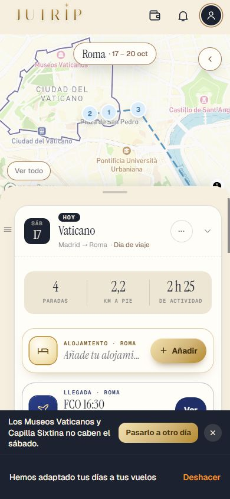
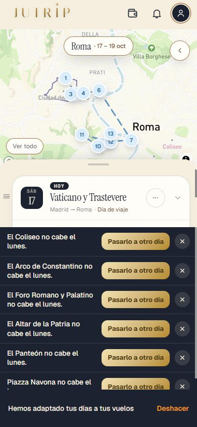
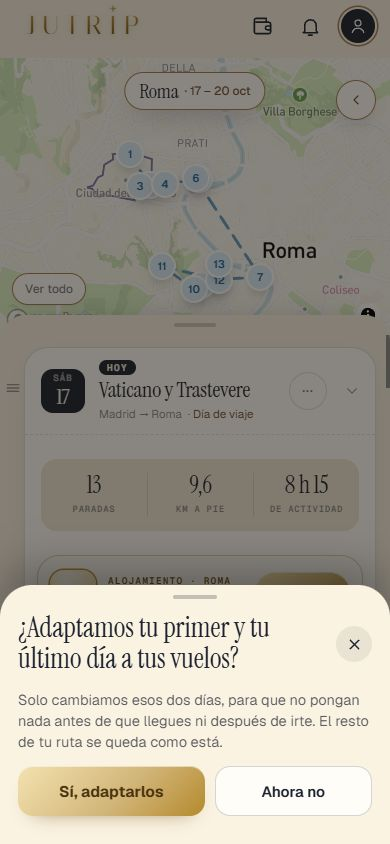
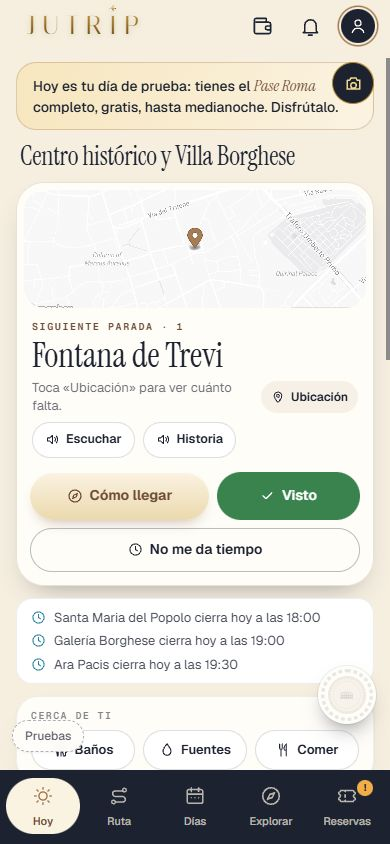
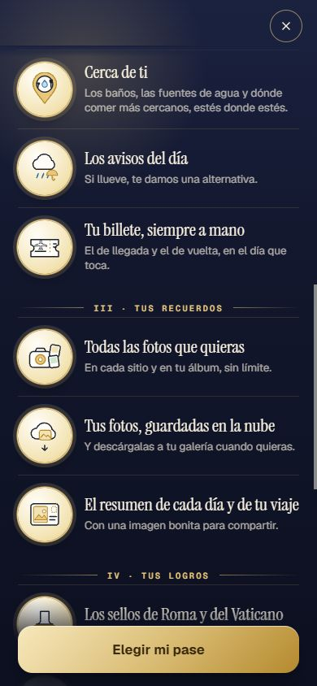
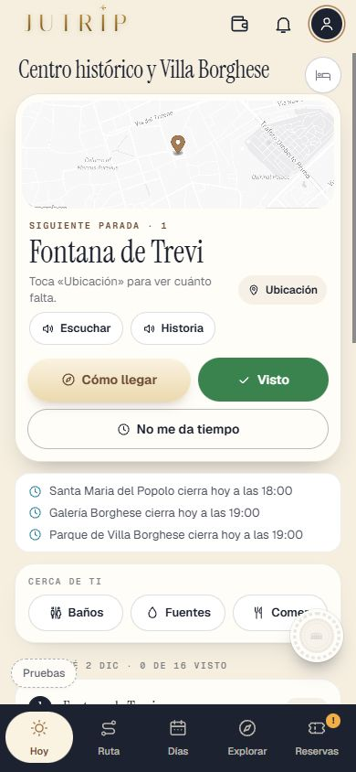

Repaso de la Tanda 10S7c
La batería de pruebas en 0 fallos de una pasada (tres veces seguidas y en 35 minutos), la descarga más ligera, las zonas de toque de 44 px y los retoques de la 10N12. Marca cada punto en tu teléfono cuando lo hayas comprobado (se guarda en este navegador).
0 · Antes de empezar ✅ Hecho — Prompt guardado, sin migraciones, nota de estado cada 30 minutos; se añade al motor el modo «adaptar solo el primer día» (y el último)Motor: solo se AÑADE un módulo nuevo (shared/routeEngine/adaptarDiaVuelo.js) y un endpoint nuevo (POST /api/adaptar-dia-vuelo). No se cambia /api/rebuild-day, ni buildDayBlockV3, ni listasTrip, ni la generación de rutas. Sin Claude ni Mapbox. Dónde: No es de móvil. 1 · El modo nuevo del motor ✅ Hecho — Usa las mismas paradas de ese día, ninguna de otros días; nada pasa a otro día y no se toca ningún otro díaLa prueba comprueba que lo que se queda + «Si te sobra tiempo» son exactamente las paradas de entrada y que el día 2 ni se envía. Dónde: Con pase, llegada a las 16:30 y [Sí, adaptarlos]: mira el día 2. 
⚠️ A medias — El día empieza a la hora de llegada más el tiempo hasta el alojamiento o el centro; ordena y vuelve a poner las horas para que quepan las máximas respetando los horarios de ese día (lo que empezaba a las 10:00 y cabe a las 17:00 se queda a las 17:00)El motor conserva el orden recibido: solo ordena por su hora las de hora fija (no intercambia una parada que abre por la tarde con otra que abre por la mañana). Nada se adelanta en el primer día. Con la llegada a las 16:30 el día 1 pasó de 17 paradas a 6 que se quedan (la primera, el Arco de Constantino, a las 17:00) y 11 aparte. Una comida quitada porque cae antes de la llegada no se recoloca. Dónde: DÍAS > día 1 tras [Sí, adaptarlos]. ✅ Hecho — Lo que no cabe pasa a «Si te sobra tiempo» (nunca se pierde)Las paradas con reserva no se tocan nunca ni salen como «no cabe». Dónde: DÍAS > día 1 > Si te sobra tiempo. ⚠️ A medias — En el último día, igual con la hora de irse al aeropuerto; el día de vuelta, como lo dejasteCon salida a las 15:00 y sin día de vuelta, el último día acaba con tiempo para el aeropuerto. Con día de vuelta (el caso normal), el último día de ciudad NO se recorta por el vuelo: lo hace el día de vuelta, como en la 10S7b, y entonces no hay aviso de imprescindibles de ese día. Dónde: Cuenta con pase sin día de vuelta: poner la salida a las 15:00. 2 · Los imprescindibles que no caben ⚠️ A medias — Si lo que no cabe es un imprescindible, no se queda escondido: debajo de la franja «Hemos adaptado tus días a tus vuelos», «El Coliseo no cabe el jueves.» y [Pasarlo a otro día], que abre la hoja de mover parada de siempre; la parada va la primera del día que elijaEl motor marca como imprescindibles MUCHOS sitios (el tier del destino): con salida a las 10:30 el último día salen 6 avisos seguidos (Coliseo, Arco de Constantino, Foro Romano y Palatino, Altar de la Patria, Panteón y Piazza Navona). Para que no tape la pantalla el aviso tiene alto máximo 38vh con scroll. Decisión tuya: ¿solo los grandes (Coliseo/Foro, Vaticano, Borghese)? El aviso va justo encima de la barra, pegado a la franja, y se queda hasta que lo pasas, lo cierras (✕) o deshaces (la franja se va a los 6 s). Dónde: Con pase: llegada tarde en RESERVAS > [Sí, adaptarlos]. 
3 · Preguntar y deshacer ✅ Hecho — Nada cambia sin preguntar: todo va con la alerta y el Deshacer de la 10S7b; Deshacer lo deja todo como estabaSi el motor no responde, queda de respaldo el recorte en la app de la 10S7b. Dónde: Alerta > Sí > Deshacer. 
4 · El plan de llegada ✅ Hecho — El plan de llegada dice lo que de verdad ha pasado: nunca «la Roma antigua pasa al día 2» si no ha pasadoSe contrasta con la ruta real al leer (no se toca la generación): «pasa al día 2» solo si el día 2 es de verdad ese día escrito; «no cabe en tu viaje» solo si ese día no está en ninguna parte; si no se puede comprobar, se omite. Route.planLlegada sigue guardando lo que dijo el motor; hoy nadie más lo lee. Dónde: Hoja del resumen del vuelo. 5 · La ruta normal no cambia ✅ Hecho — La ruta normal no cambia: la muestra de 60 fechas sale idéntica a la de antesComparada con la huella guardada (sin regenerarla): «las rutas salen exactamente iguales que antes», antes de empezar, con el módulo nuevo y al final. Dónde: No es de móvil. 6 · La prueba ✅ Hecho — pruebaTanda10S7c (X, Y): llegada a las 16:30, el Coliseo con su aviso y [Pasarlo a otro día], Deshacer, salida a las 15:00 el último día, el texto del plan de llegadaMás pruebaJutrip, pruebaTanda10J y las antiguas tocadas. Dónde: No es de móvil. 7 · Las listas de comprobación ✅ Hecho — Las listas de la 10S5, 10S6, 10S7 y 10S7b eran la de la 10S4 por error: arregladasCausa: los cuatro scripts de repaso seguían leyendo _10s4_puntos.json (lo copié sin cambiar la ruta en minúsculas). Ahora cada uno lee el suyo; regeneradas REPASO_10S5, 10S6, 10S7 y 10S7b (19, 12, 20 y 13 puntos) y sustituida la lista en esas cuatro secciones de INFORME_TANDA10B.md. Dónde: docs/dias/REPASO_10S5.html … REPASO_10S7b.html. Todas las capturas
10s_aviso_375x667 
10s_cama_dia_de_prueba 10s_lista_x_375_final 10s_lista_x_final 
10s_lista_x_medio 10s_mis_viajes_fechas 10s_toque_ajustes_antes 10s_toque_ajustes_despues 10s_toque_cama_antes 
10s_toque_cama_despues